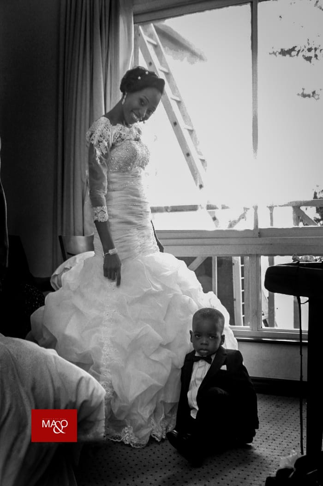
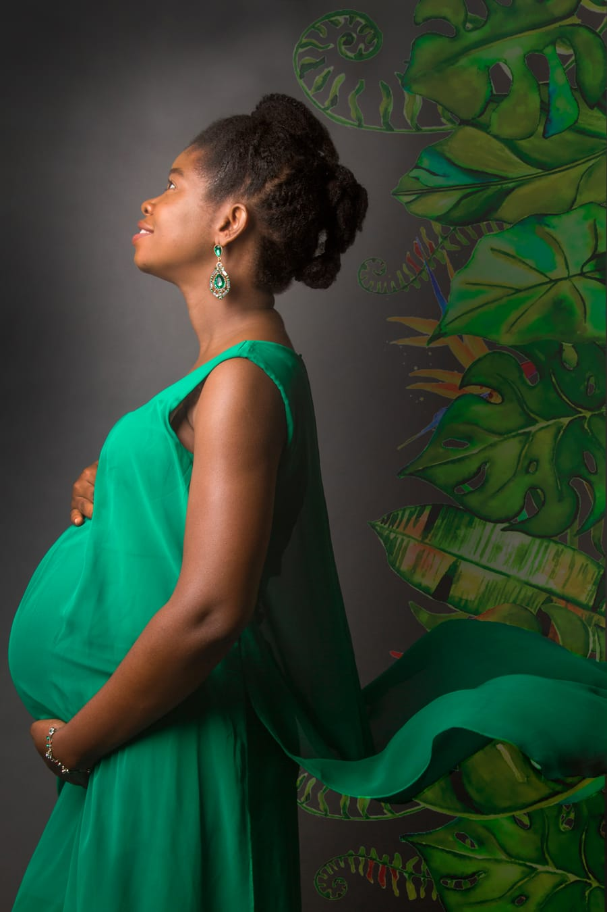
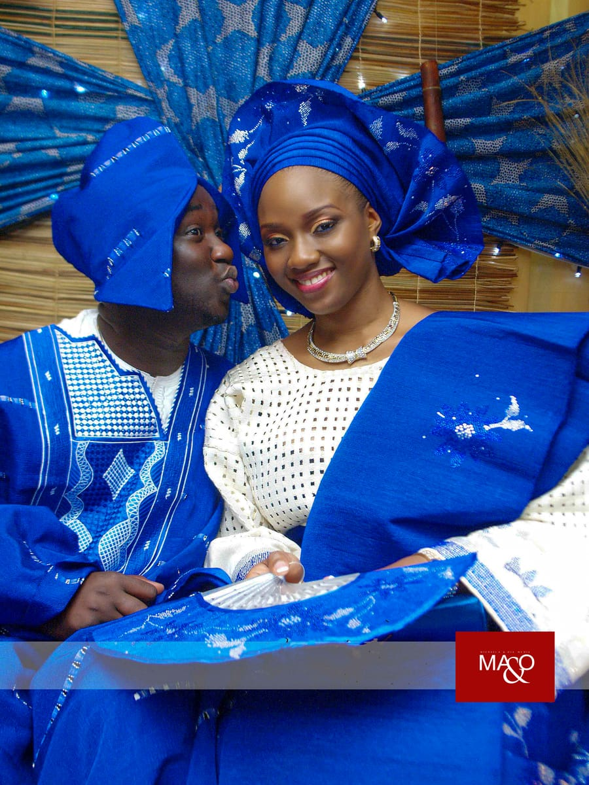
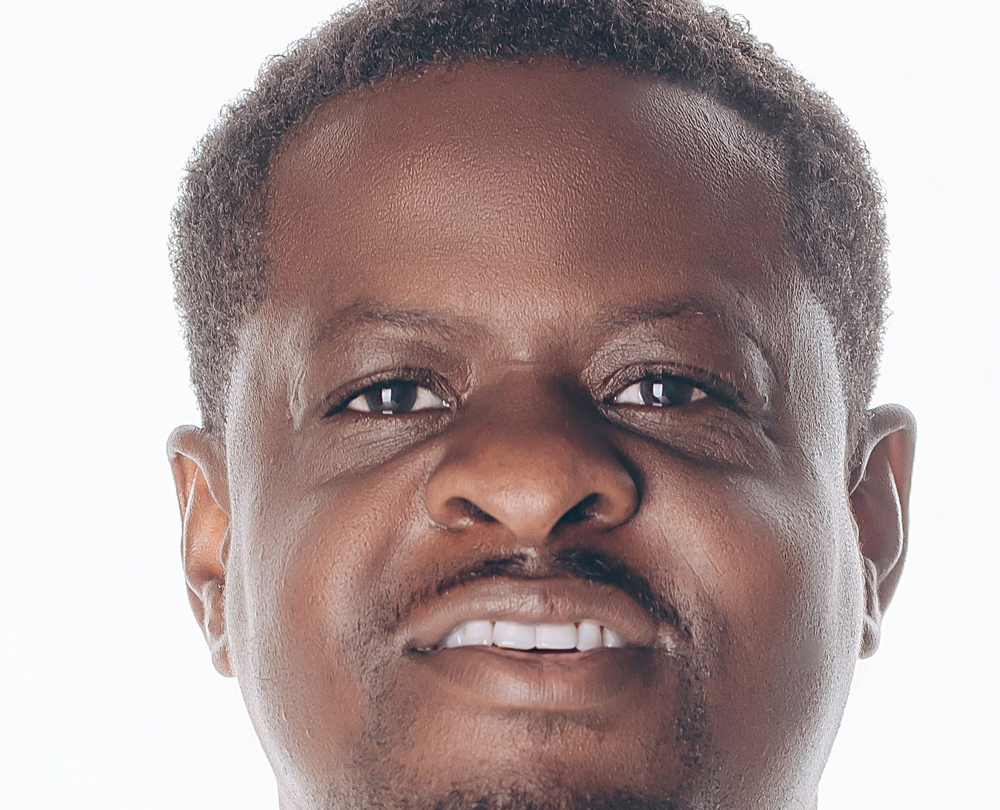
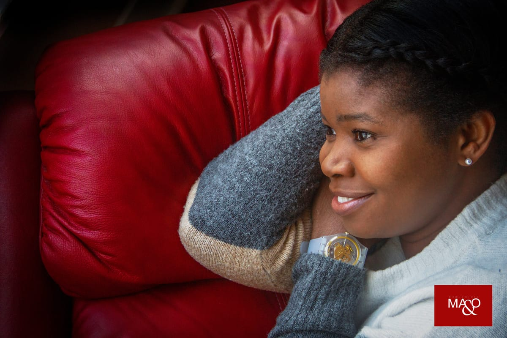
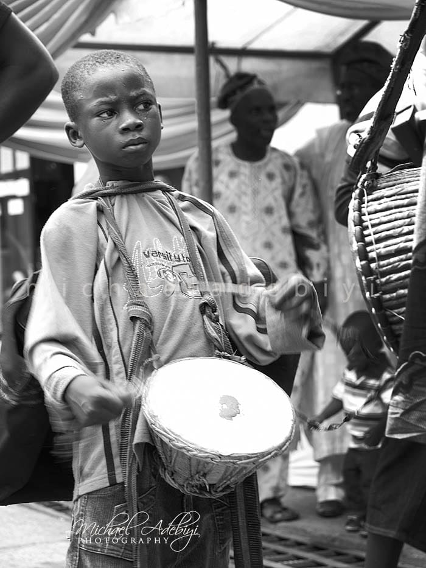
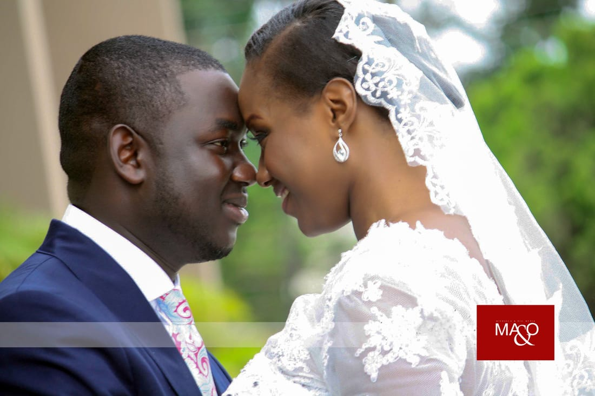

1:1 Listening Hub · human connection
People.
I’m Segun Michael. I listen, create and bring ideas to life across conversations, media and real estate.
1:10 MAO Media · Inspire Network · creative expression
Stories.
Pull back from one face and you find the others. Portraits, weddings and studio work, made through MAO Media.
1:100 MAO Contractors · practical execution
Places.
Pull back again and there’s a room. Renovation planning and project coordination, through MAO Contractors.
Line drawing for illustration. Not a real project.
1:∞ What comes next
Possibilities.
Every meaningful connection begins with a conversation.